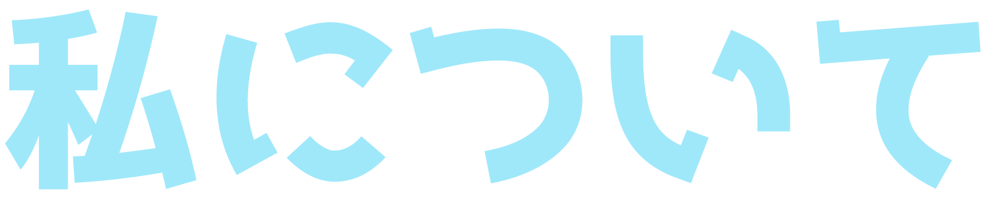

<!DOCTYPE html>
<html lang="ja">
<head>
    <meta charset="UTF-8">
    <title>Aquarium web site</title>
    <link href="css/reset.css" rel="stylesheet" type="text/css">
    <link href="css/about.css" rel="stylesheet" type="text/css">
    <link rel="shortcut icon" href="icon/favicon.ico">
</head>

<body>
    <div id="about">
    <main class=stage>

      <div class="frame"></div>

            <canvas id="cvs" width="1920px" height="975px" ></canvas>

            <script>
            
            var canvas = document.getElementById("cvs");
            var ctx = canvas.getContext("2d");
            var imgCnt = 20;  // 描画する画像の数
            var aryImg = [];  // 画像の情報を格納
            var cvsw = 1920;   // canvasタグに指定したwidth
            var cvsh = 975;   // canvasタグに指定したheight
            var imgBaseSizeW = 30;    // 画像の基本サイズ横幅
            var imgBaseSizeH = 30;  // 画像の基本サイズ立幅
            var speedMax = 2;         // 落下速度の最大値
            var speedMin = 0.5;       // 落下速度の最小値
            
            // 画像の読み込み
            var img = new Image();
            img.src = "image/star.png";
            img.onload = flow_start;
            
            // 画像のパラメーターを設定
            function setImagas(){
            var aspect = 0;
              for(var i = 0;i < imgCnt;i++){
                aryImg.push({
                  "posx": Math.random()*cvsw,     // 初期表示位置x
                  "posy": Math.random()*cvsh,     // 初期表示位置y
                  "sizew": imgBaseSizeW,          // 画像の幅
                  "sizeh": imgBaseSizeH,          // 画像の高さ
                  "speedy": Math.random()*(speedMax-speedMin)+speedMin,　// 画像が落ちていく速度
                });
              }
            }
            
            // 描画、パラメーターの更新
            var idx = 0;
            function flow(){
              ctx.clearRect(0,0,cvsw,cvsh);
              for(idx = 0;idx < imgCnt;idx++){
                aryImg[idx].posy += aryImg[idx].speedy;;
                ctx.drawImage(img, aryImg[idx].posx, aryImg[idx].posy, aryImg[idx].sizew , aryImg[idx].sizeh);
                // 範囲外に描画された画像を上に戻す
                if(aryImg[idx].posy >= cvsh){
                  aryImg[idx].posy = 0 - aryImg[idx].sizeh;
                }
              }
            }
            
            function flow_start(){
              setImagas();
              setInterval(flow,10);
            }
            
            </script>
    <div id="profile">
    <div class="box"></div> 
    <div class="box2">
        <!---->
    </div> 
    </div>
    <button type="button"onClick="document.location='index.html';"class="menu-btn"></button>
    
    </main>
</div>
    
</body>
